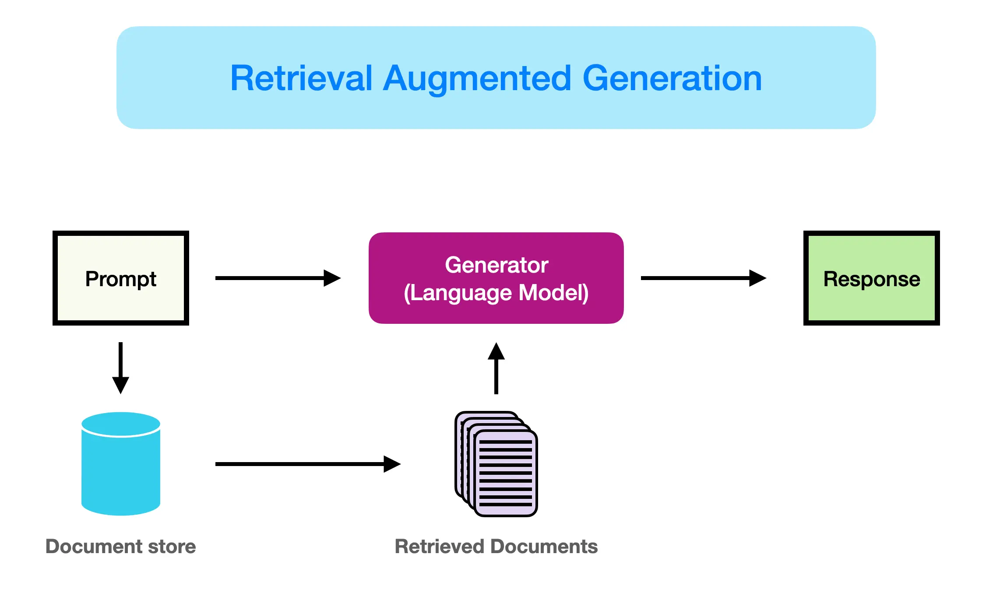
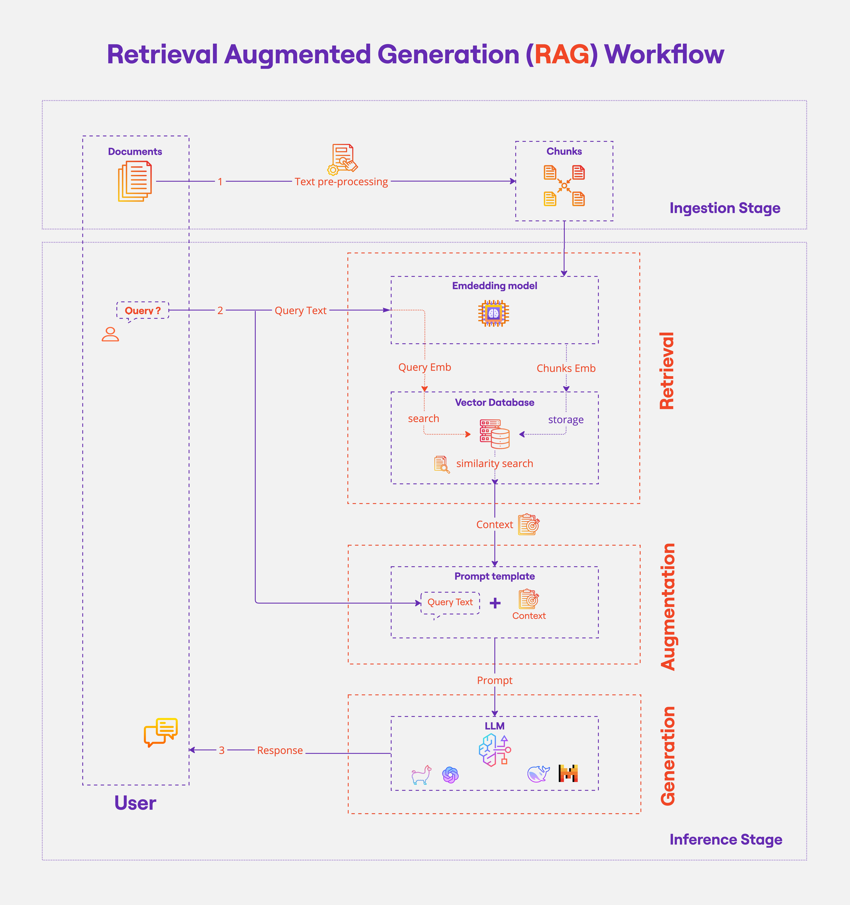

RAG Systems#
Recap#
Prompt Elements#
A prompt contains any of the following elements:
Instruction - a specific task or instruction you want the model to perform
Context - external information or additional context that can steer the model to better responses
Input Data - the input or question that we are interested to find a response for
Output Indicator - the type or format of the output.
Example:
Classify the text into neutral, negative, or positive
Text: I think the food was okay.
Sentiment:
Problem with LLMs#
LLMs face some problems until today. Some of the problems are:
Hallucination: Models tend to answer with garbage/irrelevant data if they don’t know the right answer. This can be solved with grounding and prompting.
Reasoning & Calculations: LLMs usually fail in these types of questions. They are not trained to perform such operations. Can be solved with CoT prompting or fine-tuning.
Missing information: The model is trained on a limited set of data. We would not expect it to answer questions about unknown domains
Solving Missing Information#
Model Fine-tuning#
Fine-tuning LLMs means we take a pre-trained model and further train it on a specific data set. It is a form of transfer learning where a pre-trained model trained on a large dataset is adapted to work for a specific task. The dataset required for fine-tuning is very small compared to the dataset required for pre-training.
Prompt to Microsoft Copilot: Generate an image that represents a large language model being fine-tuned
Problems with Fine-tuning#
Cost: it is costly, requires resources and time
Short lifetime: the model will need to be fine-tuned again whenever we receive new data
Harder to keep information: fine-tuning usually helps the model to do a specific task, retaining information is more tricky for LLMs
Introducing RAG#
Retrieval Augmented Generation (RAG) is an architecture that augments the capabilities of a Large Language Model (LLM) like ChatGPT by adding an information retrieval system that provides grounding data. This is very similar to what search engines do (information retrieval).
Data is stored in a database as documents
Relevant information is passed to the model in the system prompt
The model is instructed to answer based on the information provided only

RAG Components#
Vector Database
Document Retriever (Search Operation)
Prompt-injection and model generation
Vector Database#
In a RAG system, documents are usually stored in vector databases.
Each document is stored as an instance, alongside it’s metadata (id, name of the file, category, date… etc.)
Embedding vector is also stored in the database. This will help us in retrieval
Vectors are indexed (similar vectors clustered together for quicker search)
Documents Retrieval#
When the user asks a query, we retrieve the top k relevant documents from the database. The similarity is based on:
Cosine similarity (Semantic search)
Search algorithms, e.g. BM25 (Keyword search)
Prompting and Generation#
After the documents are retrieved, they are injected in the system prompt to the model. We can further instruct the model to answer based on the input data only.
Example:
You are a helpful AI assistant. Your task is to answer user questions based on the provided context.
You should only use information from the provided documents. If you can't find the answer in the context, simply respond that the answer is not found in the input data.
Context:
DOC 1:
<title>Topics covered in the Bootcamp</title>
- Python
- EDA
- Machine Learning
- Computer Vision
- NLP
- Time Series
User query: How many topics are covered in the bootcamp?
Response:
Output:
There are 6 topics covered in the bootcamp.

RAG Conclusion#
PROS:#
Dynamically insert relevant data in the prompt
Create better systems that give more accurate answers
Avoid fine-tuning the model multiple times
CONS#
Document parsing is challenging especially with different types of files (HTML, PDF, JSON, etc.)
Heavily depends on the retrieved data and the model’s capability to extract relevant information from the input data